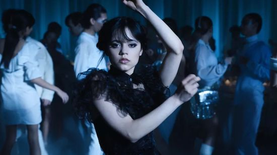
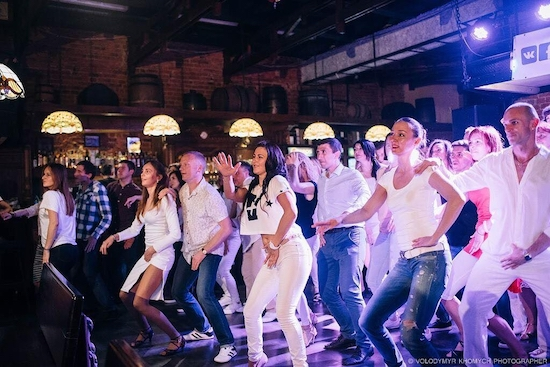
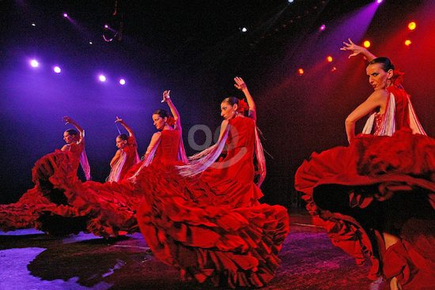
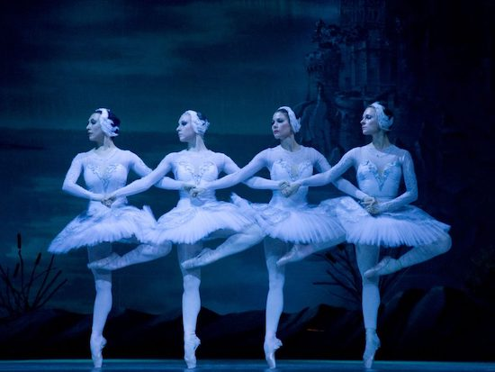
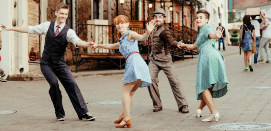

Танець і музика
Докладніше Танцювальна музика
Танець здебільшого виконується під музику або спів, і розвиток різних видів і напрямків танцю відбувався водночас із розвитком відповідних музичних жанрів та музичних стилів. Для танцювальної музики здебільшого характерний чіткий ритм. Іноді, як у випадку степу чи фламенко, танцюрист або танцюристи самі створюють для себе музичний супровід, відбиваючи ритм підборами або використовуючи додаткові засоби на зразок кастаньєт чи маракасів.
Музичний ритм вимагає двох елементів: регулярний пульс (тактус), що встановлює темп, та певну послідовність акцентів, що встановлює харатерний музичний розмір. Основний пульс приблизно дорівнює часу, потрібного, щоб зробити крок або жест. Кожен танець має характерний ритм. Танго наприклад танцюють на 2/4 і в темпі приблизно 66 ударів на хвилину. Базовий повільний крок виконується приблизно за один удар, тобто повний крок правою-лівою дорівнює розміру 2/4. Базовий повільний крок відраховується як «slow-slow», тоді як існують складніші кроки, які відраховують «slow — quick-quick».
Так само, як музичний ритм визначається чередуванням сильних і слабких тактів, рухи тіла часто залежать від чергування сильних і слабких скорочень м'язів. Враховуючи це чергування рухів управо-вліво, вперед-назад, вгору-вниз, і враховуючи парну симетрію людського тіла, не дивно, що значна частина танців і музики мають двійний чи четверний розмір. Однак, оскільки такі рухи потребують більше часу в одній фазі, ніж іншій, як більше часу треба, щоб підняти молоток, ніж щоб ударити, деякі танцювальні ритми природно потрапляють у трійний розмір. Іноді, як у танцях балканських народів традиційні танці мають складніший ритм. Однак, складні танці, що складаються з фіксованої послідовності кроків, потребують для акомпанементу мелодій певної фіксованої тривалості.
Соціальна роль танцю
Танець споконвіку допомагав спілкуванню людей: весело проводити час з друзями, а молоді — знайомитися та зустрічатися: на сільських майданах, на балах, на вечірках, у клубах, на дансингах, дискотеках та в нічних клубах. Спілкуванню служать здебільшого парні танці, що виникли насамперед із цією метою.
Види танцю
Народний танець
Докладніше Народний танець
Народні танці займають значне місце в культурі кожного народу й етносу земної кулі поряд із народною піснею та народними звичаями. Частково народні танці, наприклад, хороводи мають обрядовий характер.
Серед відомих українських народних танців гопак, метелиця, козачок, тропак, вальс, полька, коломийка, аркан, роман та інші.
Серед народних танців інших народів світу можна відзначити такі як жок, жемжурка, класичні індійські танці, танець живота, зіка, краков'як, трепак, лезгінка, атан, болеро, гальярда, фламенко.
Історичний танець
Докладніше Історичний танець
Історичними танцями називають здебільшого європейські танці, популярні в певну епоху на балах знаті. Багато з цих танців виросли з народних, однак набрали вишуканого культурного стилю. Популярні історичні танці змінювалися з епохами. До них належать павана, гальярда, контрданс, менует, мазурка, полонез, кадриль та інші.
Балет
Докладніше Балет
Балет — синкретичний вид сценічного мистецтва, вистава із цілісним сюжетом, в якій засобами танцю передаються почуття персонажів. Танець у балеті має свою особливу техніку, якій потрібно довго й змалечку навчатися. На основі балету в 20-му і 21-му столітті розвинулися нові форми, такі, як танц-модерн, сучасний балет, контемпорарі-денс. Мистецтво постановки балету та інших сценічних танців потребує спеціально навчених людей — хореографів, балетмейстрів.
Зазвичай, так само як опера, балет залежить від масштабного наративу. Рухи та жести використовуються для того, щоб відобразити особистість персонажів та тієї ролі, яку вони відіграють у сюжеті. Ці театральні потреби вимагають довших, вільніших рухів, ніж у ненаративнивних стилях танцю. У 19-столітті, проте, виник білий балет, що дозволяє включення ритмічного танцю, а в 20-му столітті з нього розвинувся повністю безсюжетний балет. Відомий приклад такого включення — танець лебедят у другій дії «Лебединого озера».
Балет розвинувся з придворних драматичних постановок 16-го та 17-го століття у Франції та Італії, і впродовж тривалого часу танцюристи виконнували танці, що виникли з форми музичних суїт, що використовували ритми танцю. В еру романтичного націоналізму така форма танцю була характерною.
Балет увійшов у моду в романтичну еру разом із великими оркестрами та музичними ідеями, що не відзначалися простотою ритму, та танцем, найважливішою рисою якого було створення драматичного ефекту. Для цього балет використовував те, що отримало назву «ритм і форма» рухів, які разом передавали характер. почуття і наміри, і тільки окремі сцени вимагали точної синхронізації кроків та музики, властивої іншим формам танцю. Як наслідок сучасні європейці, схоже зовсім не можуть осягнути ідею «примітивних танцювальних рухів». Ситуація почала змінюватися в 20 столітті з такими виставами як «Весна священна» Стравінського, в якій нова ритмічна мова збуджує первісні почуття первісного минулого.
Бальні танці
Докладніше Бальні танці
Бальні танці — різновид танців із партнером, які танцюють як для задоволення на балах та вечірках, так і на танцювальних змаганнях. До програми міжнародних спортивних змагань входять десять танців, розділених на дві програми — стандартну і латиноамериканську.
- Стандартна програма
- повільний вальс
- квікстеп
- танго
- фокстрот
- віденський вальс
- Латиноамериканська програма
- ча-ча-ча
- джайв
- румба
- самба
Свінг
Свінгові танці увійшли в моду в 20-х роках 20 ст. разом із музикою в стилі свінг, однак своїм корінням вони завдячують танцям американців африканського походження, що танцювалися на плантаціях США ще в 19 ст. Помилково вважається, що для цих танців характерний високий темп та швидка робота ніг, насправді вони охоплюють майже усі музичні темпи. Так, блюз виконують у темп від 50 ударів на хвилину, а шег, бальбоа та лінді хоп іноді сягають темпу у 320 та більше ударів. У 1920-х роках з'явилися також різновиди, популярні серед білого населення Сполучених Штатів: чарлстон, бальбоа, іст-кост свінг. Тридцяті роки стали свідками буму лінді хопу, одного з найрізноманітніших танців. Він виконується під майже будь-яку за темпом свінгову музику, але слави набрав за швидке енергійне виконання та введення у малюнок танцю акробатичних елементів. Свінгових танцюристів називали в США джитербагерами (від jitter bug — жуки, що смикаються). Під впливом американського свінгу з початком рок-н-рольної ери в Європі склалися свої свінгові стилі танцю — бугі-вугі, джайв, акробатичний рок-н-рол. У сучасній Америці набув популярності вест-кост свінг.